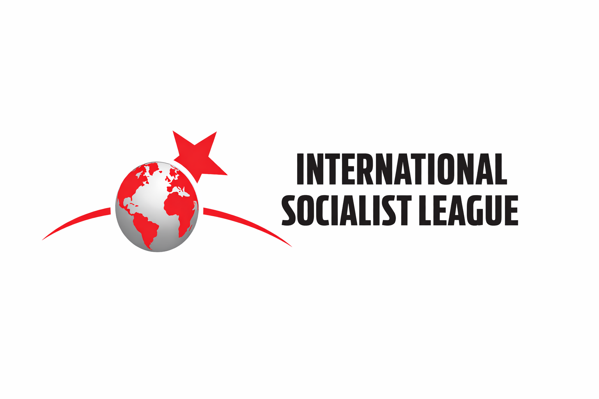

Українська Соціалістична Ліга є частиною Міжнародної Соціалістичної Ліги – революційного інтернаціоналу соціалістичних партій та організацій, що об'єднує борців з понад 30 країн на 5 континентах. МСЛ (ISL) рішуче виступає за повалення капіталізму, робітничий контроль, національно-визвольну боротьбу, фемінізм та екологізм. Секції МСЛ брали участь у багатьох повстаннях, мітингах, народних мобілізаціях від часу заснування у 2019 році. Нещодавно було проведено III Світовий Конгрес організації, на якому до інтернаціоналу доєдналося багато нових ініціатив, що майже подвоїло кількість країн, де присутня МСЛ.
Почитати про МСЛ детальніше можна за посиланнями: